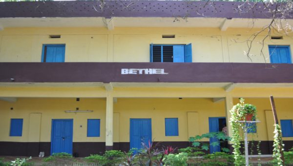

It is almost a parallel culture, an experience that takes you out of your comfort zone and exposes you to several experiences. Living by some stringent rules is one of them. Getting to know a host of students from diverse backgrounds at very close quarters, is another. At COTR, the idea is to make one as comfortable as possible in this parallel culture.
The centre of Hostel life in COTR Theological Seminary is the Chapel. It stands at the heart of any spiritual formation thereby tuning student to become better pastors for the congregation. Students are encouraged to discipline themselves in the reading of the Bible and meditate on the word of God. There is also a Prayer tower for student to spend time in personal prayers without any disturbances.
In synchronization with our thrust on the whole person, the college has provided adequate prospect for the progress of the whole person. Students organize regular sporting events and activities in consultation with its respective faculty in-charge of the sports. A multipurpose sports field, and a sports-room with the facility for indoor games provide for wholesome activities. Regular tournaments and the Annual Sports Day draw enthusiastic participation of the entire community, faculty, staff, students and children alike.
The intermittent socials and other functions support the whole community to get-together for fellowship and recreation. Our inimitable community delivers many opportunities within its multicultural setting for students to develop social skills and interpersonal relationships. The college also takes part in various activities organised by the Christian community of Vishakapatnam.
COTR has a multi-faceted sporting arena that is located on campus provides access to students more opportunity to be involved in organised team games and other sporting and entertaining events.
